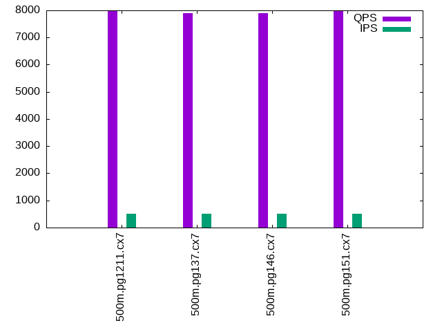

Introduction
This is a report for the insert benchmark with 500M docs and 1 client(s). It is generated by scripts (bash, awk, sed) and Tufte might not be impressed. An overview of the insert benchmark is here and a short update is here. Below, by DBMS, I mean DBMS+version.config. An example is my8020.c10b40 where my means MySQL, 8020 is version 8.0.20 and c10b40 is the name for the configuration file.
The test server has 8 AMD cores, 16G RAM and an NVMe SSD. It is described here as the Beelink. The benchmark was run with 1 clients and there were 1 or 2 connections per client (1 for queries, 1 for inserts). The benchmark loads 500M rows without secondary indexes, creates secondary indexes, loads another 10M rows then does 3 read+write tests for one hour each that do queries as fast as possible with 100, 500 and then 1000 writes/second/client concurrent with the queries. The database doesn't fit in memory and parts of the benchmark are IO-bound. Clients and the DBMS share one server. The per-database configs are in the per-database subdirectories here.
The tested DBMS are:
- pg1211.cx7 - Postgres 12.11 and the cx7 config
- pg137.cx7 - Postgres 13.7 and the cx7 config
- pg146.cx7 - Postgres 14.6 and the cx7 config
- pg151.cx7 - Postgres 15.1 and the cx7 config
Contents
- Summary
- l.i0: load without secondary indexes
- l.x: create secondary indexes
- l.i1: continue load after secondary indexes created
- q100.1: range queries with 100 insert/s per client
- q500.1: range queries with 500 insert/s per client
- q1000.1: range queries with 1000 insert/s per client
Summary
The numbers are inserts/s for l.i0 and l.i1, indexed docs (or rows) /s for l.x and queries/s for q*.2. The values are the average rate over the entire test for inserts (IPS) and queries (QPS). The range of values for IPS and QPS is split into 3 parts: bottom 25%, middle 50%, top 25%. Values in the bottom 25% have a red background, values in the top 25% have a green background and values in the middle have no color. A gray background is used for values that can be ignored because the DBMS did not sustain the target insert rate. Red backgrounds are not used when the minimum value is within 80% of the max value.
| dbms | l.i0 | l.x | l.i1 | q100.1 | q500.1 | q1000.1 |
|---|---|---|---|---|---|---|
| 500m.pg1211.cx7 | 72338 | 177718 | 3004 | 7770 | 7988 | 8056 |
| 500m.pg137.cx7 | 74074 | 193313 | 2985 | 7851 | 7907 | 8082 |
| 500m.pg146.cx7 | 70671 | 191243 | 2928 | 7760 | 7904 | 8091 |
| 500m.pg151.cx7 | 72770 | 188717 | 2866 | 7602 | 7993 | 7854 |
This lists the average rate of inserts/s for the tests that do inserts concurrent with queries. For such tests the query rate is listed in the table above. The read+write tests are setup so that the insert rate should match the target rate every second. Cells that are not at least 95% of the target have a red background to indicate a failure to satisfy the target.
| dbms | q100.1 | q500.1 | q1000.1 |
|---|---|---|---|
| pg1211.cx7 | 100 | 499 | 999 |
| pg137.cx7 | 100 | 499 | 998 |
| pg146.cx7 | 100 | 499 | 998 |
| pg151.cx7 | 100 | 499 | 999 |
| target | 100 | 500 | 1000 |
l.i0
l.i0: load without secondary indexes. Graphs for performance per 1-second interval are here.
Average throughput:
Insert response time histogram: each cell has the percentage of responses that take <= the time in the header and max is the max response time in seconds. For the max column values in the top 25% of the range have a red background and in the bottom 25% of the range have a green background. The red background is not used when the min value is within 80% of the max value.
| dbms | 256us | 1ms | 4ms | 16ms | 64ms | 256ms | 1s | 4s | 16s | gt | max |
|---|---|---|---|---|---|---|---|---|---|---|---|
| pg1211.cx7 | 99.999 | nonzero | nonzero | 0.031 | |||||||
| pg137.cx7 | 99.999 | nonzero | nonzero | nonzero | nonzero | 0.382 | |||||
| pg146.cx7 | 99.999 | nonzero | nonzero | nonzero | 0.076 | ||||||
| pg151.cx7 | 99.999 | nonzero | nonzero | 0.048 |
Performance metrics for the DBMS listed above. Some are normalized by throughput, others are not. Legend for results is here.
ips qps rps rmbps wps wmbps rpq rkbpq wpi wkbpi csps cpups cspq cpupq dbgb1 dbgb2 rss maxop p50 p99 tag 72338 0 34 0.3 197.2 27.7 0.000 0.004 0.003 0.393 9200 24.0 0.127 27 47.8 53.6 0.0 0.031 72418 71221 500m.pg1211.cx7 74074 0 30 0.2 183.8 37.0 0.000 0.003 0.002 0.511 9500 24.2 0.128 26 47.8 60.6 0.0 0.382 74118 72920 500m.pg137.cx7 70671 0 29 0.2 166.1 33.0 0.000 0.003 0.002 0.479 9062 23.3 0.128 26 47.8 61.2 0.0 0.076 70819 69653 500m.pg146.cx7 72770 0 30 0.2 175.3 35.0 0.000 0.003 0.002 0.493 9278 23.3 0.128 26 47.8 61.8 0.0 0.048 72818 71819 500m.pg151.cx7
l.x
l.x: create secondary indexes.
Average throughput:
Performance metrics for the DBMS listed above. Some are normalized by throughput, others are not. Legend for results is here.
ips qps rps rmbps wps wmbps rpq rkbpq wpi wkbpi csps cpups cspq cpupq dbgb1 dbgb2 rss maxop p50 p99 tag 177718 0 463 55.6 528.5 83.2 0.003 0.320 0.003 0.479 743 12.1 0.004 5 91.9 112.7 0.0 0.004 NA NA 500m.pg1211.cx7 193313 0 478 59.0 261.5 59.7 0.002 0.312 0.001 0.316 646 12.1 0.003 5 91.9 105.2 0.0 0.007 NA NA 500m.pg137.cx7 191243 0 473 58.4 276.8 62.6 0.002 0.313 0.001 0.335 654 12.0 0.003 5 91.9 108.6 0.0 0.004 NA NA 500m.pg146.cx7 188717 0 522 64.6 306.4 69.7 0.003 0.350 0.002 0.378 765 11.8 0.004 5 91.9 113.2 0.0 0.005 NA NA 500m.pg151.cx7
l.i1
l.i1: continue load after secondary indexes created. Graphs for performance per 1-second interval are here.
Average throughput:

Insert response time histogram: each cell has the percentage of responses that take <= the time in the header and max is the max response time in seconds. For the max column values in the top 25% of the range have a red background and in the bottom 25% of the range have a green background. The red background is not used when the min value is within 80% of the max value.
| dbms | 256us | 1ms | 4ms | 16ms | 64ms | 256ms | 1s | 4s | 16s | gt | max |
|---|---|---|---|---|---|---|---|---|---|---|---|
| pg1211.cx7 | 74.099 | 23.864 | 2.028 | 0.008 | 0.001 | 1.267 | |||||
| pg137.cx7 | 73.984 | 23.796 | 2.209 | 0.010 | 0.001 | 1.313 | |||||
| pg146.cx7 | 72.549 | 25.128 | 2.315 | 0.007 | 0.001 | 1.313 | |||||
| pg151.cx7 | 71.061 | 26.470 | 2.463 | 0.006 | 0.001 | 1.323 |
Performance metrics for the DBMS listed above. Some are normalized by throughput, others are not. Legend for results is here.
ips qps rps rmbps wps wmbps rpq rkbpq wpi wkbpi csps cpups cspq cpupq dbgb1 dbgb2 rss maxop p50 p99 tag 3004 0 4016 32.0 5071.8 79.6 1.337 10.911 1.688 27.144 9682 5.7 3.223 152 93.6 116.9 0.0 1.267 3246 949 500m.pg1211.cx7 2985 0 4021 32.1 5136.5 79.6 1.347 10.997 1.721 27.318 9734 5.7 3.261 153 93.6 113.1 0.0 1.313 3196 1049 500m.pg137.cx7 2928 0 3949 31.5 5000.8 78.3 1.349 11.006 1.708 27.393 9492 5.4 3.242 148 93.6 120.8 0.0 1.313 3196 1249 500m.pg146.cx7 2866 0 3873 30.9 4911.3 76.2 1.351 11.027 1.714 27.239 9288 5.3 3.241 148 93.6 121.7 0.0 1.323 3047 1148 500m.pg151.cx7
q100.1
q100.1: range queries with 100 insert/s per client. Graphs for performance per 1-second interval are here.
Average throughput:
Query response time histogram: each cell has the percentage of responses that take <= the time in the header and max is the max response time in seconds. For max values in the top 25% of the range have a red background and in the bottom 25% of the range have a green background. The red background is not used when the min value is within 80% of the max value.
| dbms | 256us | 1ms | 4ms | 16ms | 64ms | 256ms | 1s | 4s | 16s | gt | max |
|---|---|---|---|---|---|---|---|---|---|---|---|
| pg1211.cx7 | 99.727 | 0.271 | 0.001 | 0.001 | nonzero | 0.021 | |||||
| pg137.cx7 | 99.769 | 0.229 | 0.002 | 0.001 | nonzero | 0.035 | |||||
| pg146.cx7 | 99.746 | 0.250 | 0.003 | 0.001 | nonzero | 0.052 | |||||
| pg151.cx7 | 99.777 | 0.219 | 0.003 | 0.001 | nonzero | 0.061 |
Insert response time histogram: each cell has the percentage of responses that take <= the time in the header and max is the max response time in seconds. For max values in the top 25% of the range have a red background and in the bottom 25% of the range have a green background. The red background is not used when the min value is within 80% of the max value.
| dbms | 256us | 1ms | 4ms | 16ms | 64ms | 256ms | 1s | 4s | 16s | gt | max |
|---|---|---|---|---|---|---|---|---|---|---|---|
| pg1211.cx7 | 85.153 | 14.847 | 0.049 | ||||||||
| pg137.cx7 | 93.042 | 6.931 | 0.028 | 0.084 | |||||||
| pg146.cx7 | 91.194 | 8.806 | 0.064 | ||||||||
| pg151.cx7 | 91.625 | 8.319 | 0.056 | 0.082 |
Performance metrics for the DBMS listed above. Some are normalized by throughput, others are not. Legend for results is here.
ips qps rps rmbps wps wmbps rpq rkbpq wpi wkbpi csps cpups cspq cpupq dbgb1 dbgb2 rss maxop p50 p99 tag 100 7770 147 1.2 269.9 4.2 0.019 0.154 2.704 42.851 30552 13.6 3.932 140 93.7 117.7 0.0 0.021 7543 6567 500m.pg1211.cx7 100 7851 151 1.2 389.7 5.3 0.019 0.158 3.905 54.555 30847 13.3 3.929 136 93.7 106.3 0.0 0.035 7655 6790 500m.pg137.cx7 100 7760 151 1.2 407.8 5.5 0.019 0.160 4.086 55.947 30429 13.0 3.921 134 93.7 114.4 0.0 0.052 7623 6167 500m.pg146.cx7 100 7602 151 1.2 412.3 5.5 0.020 0.162 4.131 55.974 29742 12.9 3.912 136 93.7 114.6 0.0 0.061 7495 6568 500m.pg151.cx7
q500.1
q500.1: range queries with 500 insert/s per client. Graphs for performance per 1-second interval are here.
Average throughput:
Query response time histogram: each cell has the percentage of responses that take <= the time in the header and max is the max response time in seconds. For max values in the top 25% of the range have a red background and in the bottom 25% of the range have a green background. The red background is not used when the min value is within 80% of the max value.
| dbms | 256us | 1ms | 4ms | 16ms | 64ms | 256ms | 1s | 4s | 16s | gt | max |
|---|---|---|---|---|---|---|---|---|---|---|---|
| pg1211.cx7 | 99.938 | 0.062 | nonzero | nonzero | 0.006 | ||||||
| pg137.cx7 | 99.941 | 0.058 | nonzero | nonzero | 0.006 | ||||||
| pg146.cx7 | 99.950 | 0.050 | nonzero | nonzero | 0.010 | ||||||
| pg151.cx7 | 99.945 | 0.054 | nonzero | nonzero | 0.007 |
Insert response time histogram: each cell has the percentage of responses that take <= the time in the header and max is the max response time in seconds. For max values in the top 25% of the range have a red background and in the bottom 25% of the range have a green background. The red background is not used when the min value is within 80% of the max value.
| dbms | 256us | 1ms | 4ms | 16ms | 64ms | 256ms | 1s | 4s | 16s | gt | max |
|---|---|---|---|---|---|---|---|---|---|---|---|
| pg1211.cx7 | 84.003 | 15.903 | 0.094 | 0.146 | |||||||
| pg137.cx7 | 86.683 | 13.281 | 0.036 | 0.097 | |||||||
| pg146.cx7 | 83.464 | 16.489 | 0.047 | 0.076 | |||||||
| pg151.cx7 | 84.000 | 15.936 | 0.064 | 0.096 |
Performance metrics for the DBMS listed above. Some are normalized by throughput, others are not. Legend for results is here.
ips qps rps rmbps wps wmbps rpq rkbpq wpi wkbpi csps cpups cspq cpupq dbgb1 dbgb2 rss maxop p50 p99 tag 499 7988 642 5.1 1072.4 17.9 0.080 0.651 2.148 36.710 32490 14.4 4.067 144 93.9 100.5 0.0 0.006 7627 7510 500m.pg1211.cx7 499 7907 644 5.1 1075.8 17.9 0.081 0.659 2.155 36.738 32178 14.2 4.070 144 93.9 98.9 0.0 0.006 7671 7541 500m.pg137.cx7 499 7904 644 5.1 1004.8 17.2 0.081 0.660 2.012 35.224 32109 14.0 4.062 142 93.9 100.8 0.0 0.010 7591 7499 500m.pg146.cx7 499 7993 644 5.1 1011.8 17.3 0.081 0.653 2.026 35.402 32336 14.1 4.046 141 93.9 100.6 0.0 0.007 7448 7287 500m.pg151.cx7
q1000.1
q1000.1: range queries with 1000 insert/s per client. Graphs for performance per 1-second interval are here.
Average throughput:
Query response time histogram: each cell has the percentage of responses that take <= the time in the header and max is the max response time in seconds. For max values in the top 25% of the range have a red background and in the bottom 25% of the range have a green background. The red background is not used when the min value is within 80% of the max value.
| dbms | 256us | 1ms | 4ms | 16ms | 64ms | 256ms | 1s | 4s | 16s | gt | max |
|---|---|---|---|---|---|---|---|---|---|---|---|
| pg1211.cx7 | 99.932 | 0.067 | nonzero | nonzero | nonzero | 0.035 | |||||
| pg137.cx7 | 99.932 | 0.067 | nonzero | nonzero | 0.009 | ||||||
| pg146.cx7 | 99.941 | 0.058 | nonzero | nonzero | 0.009 | ||||||
| pg151.cx7 | 99.938 | 0.062 | nonzero | nonzero | nonzero | 0.038 |
Insert response time histogram: each cell has the percentage of responses that take <= the time in the header and max is the max response time in seconds. For max values in the top 25% of the range have a red background and in the bottom 25% of the range have a green background. The red background is not used when the min value is within 80% of the max value.
| dbms | 256us | 1ms | 4ms | 16ms | 64ms | 256ms | 1s | 4s | 16s | gt | max |
|---|---|---|---|---|---|---|---|---|---|---|---|
| pg1211.cx7 | 82.094 | 17.428 | 0.476 | 0.001 | 0.336 | ||||||
| pg137.cx7 | 82.740 | 16.810 | 0.447 | 0.003 | 0.303 | ||||||
| pg146.cx7 | 79.589 | 19.917 | 0.492 | 0.003 | 0.288 | ||||||
| pg151.cx7 | 78.961 | 20.556 | 0.483 | 0.244 |
Performance metrics for the DBMS listed above. Some are normalized by throughput, others are not. Legend for results is here.
ips qps rps rmbps wps wmbps rpq rkbpq wpi wkbpi csps cpups cspq cpupq dbgb1 dbgb2 rss maxop p50 p99 tag 999 8056 1329 10.5 1834.6 32.8 0.165 1.340 1.837 33.616 34265 15.9 4.253 158 94.9 102.3 0.0 0.035 7623 7463 500m.pg1211.cx7 998 8082 1330 10.6 1837.2 33.2 0.165 1.337 1.840 34.028 34400 15.8 4.256 156 94.9 102.3 0.0 0.009 7655 7544 500m.pg137.cx7 998 8091 1330 10.6 1824.1 32.0 0.164 1.338 1.827 32.864 34402 15.4 4.252 152 94.9 104.0 0.0 0.009 7671 7559 500m.pg146.cx7 999 7854 1331 10.6 1844.0 32.4 0.169 1.379 1.846 33.209 33462 15.3 4.260 156 94.9 104.0 0.0 0.038 7465 7335 500m.pg151.cx7
l.i0
l.i0: load without secondary indexes
Performance metrics for all DBMS, not just the ones listed above. Some are normalized by throughput, others are not. Legend for results is here.
ips qps rps rmbps wps wmbps rpq rkbpq wpi wkbpi csps cpups cspq cpupq dbgb1 dbgb2 rss maxop p50 p99 tag 72338 0 34 0.3 197.2 27.7 0.000 0.004 0.003 0.393 9200 24.0 0.127 27 47.8 53.6 0.0 0.031 72418 71221 500m.pg1211.cx7 74074 0 30 0.2 183.8 37.0 0.000 0.003 0.002 0.511 9500 24.2 0.128 26 47.8 60.6 0.0 0.382 74118 72920 500m.pg137.cx7 70671 0 29 0.2 166.1 33.0 0.000 0.003 0.002 0.479 9062 23.3 0.128 26 47.8 61.2 0.0 0.076 70819 69653 500m.pg146.cx7 72770 0 30 0.2 175.3 35.0 0.000 0.003 0.002 0.493 9278 23.3 0.128 26 47.8 61.8 0.0 0.048 72818 71819 500m.pg151.cx7
l.x
l.x: create secondary indexes
Performance metrics for all DBMS, not just the ones listed above. Some are normalized by throughput, others are not. Legend for results is here.
ips qps rps rmbps wps wmbps rpq rkbpq wpi wkbpi csps cpups cspq cpupq dbgb1 dbgb2 rss maxop p50 p99 tag 177718 0 463 55.6 528.5 83.2 0.003 0.320 0.003 0.479 743 12.1 0.004 5 91.9 112.7 0.0 0.004 NA NA 500m.pg1211.cx7 193313 0 478 59.0 261.5 59.7 0.002 0.312 0.001 0.316 646 12.1 0.003 5 91.9 105.2 0.0 0.007 NA NA 500m.pg137.cx7 191243 0 473 58.4 276.8 62.6 0.002 0.313 0.001 0.335 654 12.0 0.003 5 91.9 108.6 0.0 0.004 NA NA 500m.pg146.cx7 188717 0 522 64.6 306.4 69.7 0.003 0.350 0.002 0.378 765 11.8 0.004 5 91.9 113.2 0.0 0.005 NA NA 500m.pg151.cx7
l.i1
l.i1: continue load after secondary indexes created
Performance metrics for all DBMS, not just the ones listed above. Some are normalized by throughput, others are not. Legend for results is here.
ips qps rps rmbps wps wmbps rpq rkbpq wpi wkbpi csps cpups cspq cpupq dbgb1 dbgb2 rss maxop p50 p99 tag 3004 0 4016 32.0 5071.8 79.6 1.337 10.911 1.688 27.144 9682 5.7 3.223 152 93.6 116.9 0.0 1.267 3246 949 500m.pg1211.cx7 2985 0 4021 32.1 5136.5 79.6 1.347 10.997 1.721 27.318 9734 5.7 3.261 153 93.6 113.1 0.0 1.313 3196 1049 500m.pg137.cx7 2928 0 3949 31.5 5000.8 78.3 1.349 11.006 1.708 27.393 9492 5.4 3.242 148 93.6 120.8 0.0 1.313 3196 1249 500m.pg146.cx7 2866 0 3873 30.9 4911.3 76.2 1.351 11.027 1.714 27.239 9288 5.3 3.241 148 93.6 121.7 0.0 1.323 3047 1148 500m.pg151.cx7
q100.1
q100.1: range queries with 100 insert/s per client
Performance metrics for all DBMS, not just the ones listed above. Some are normalized by throughput, others are not. Legend for results is here.
ips qps rps rmbps wps wmbps rpq rkbpq wpi wkbpi csps cpups cspq cpupq dbgb1 dbgb2 rss maxop p50 p99 tag 100 7770 147 1.2 269.9 4.2 0.019 0.154 2.704 42.851 30552 13.6 3.932 140 93.7 117.7 0.0 0.021 7543 6567 500m.pg1211.cx7 100 7851 151 1.2 389.7 5.3 0.019 0.158 3.905 54.555 30847 13.3 3.929 136 93.7 106.3 0.0 0.035 7655 6790 500m.pg137.cx7 100 7760 151 1.2 407.8 5.5 0.019 0.160 4.086 55.947 30429 13.0 3.921 134 93.7 114.4 0.0 0.052 7623 6167 500m.pg146.cx7 100 7602 151 1.2 412.3 5.5 0.020 0.162 4.131 55.974 29742 12.9 3.912 136 93.7 114.6 0.0 0.061 7495 6568 500m.pg151.cx7
q500.1
q500.1: range queries with 500 insert/s per client
Performance metrics for all DBMS, not just the ones listed above. Some are normalized by throughput, others are not. Legend for results is here.
ips qps rps rmbps wps wmbps rpq rkbpq wpi wkbpi csps cpups cspq cpupq dbgb1 dbgb2 rss maxop p50 p99 tag 499 7988 642 5.1 1072.4 17.9 0.080 0.651 2.148 36.710 32490 14.4 4.067 144 93.9 100.5 0.0 0.006 7627 7510 500m.pg1211.cx7 499 7907 644 5.1 1075.8 17.9 0.081 0.659 2.155 36.738 32178 14.2 4.070 144 93.9 98.9 0.0 0.006 7671 7541 500m.pg137.cx7 499 7904 644 5.1 1004.8 17.2 0.081 0.660 2.012 35.224 32109 14.0 4.062 142 93.9 100.8 0.0 0.010 7591 7499 500m.pg146.cx7 499 7993 644 5.1 1011.8 17.3 0.081 0.653 2.026 35.402 32336 14.1 4.046 141 93.9 100.6 0.0 0.007 7448 7287 500m.pg151.cx7
q1000.1
q1000.1: range queries with 1000 insert/s per client
Performance metrics for all DBMS, not just the ones listed above. Some are normalized by throughput, others are not. Legend for results is here.
ips qps rps rmbps wps wmbps rpq rkbpq wpi wkbpi csps cpups cspq cpupq dbgb1 dbgb2 rss maxop p50 p99 tag 999 8056 1329 10.5 1834.6 32.8 0.165 1.340 1.837 33.616 34265 15.9 4.253 158 94.9 102.3 0.0 0.035 7623 7463 500m.pg1211.cx7 998 8082 1330 10.6 1837.2 33.2 0.165 1.337 1.840 34.028 34400 15.8 4.256 156 94.9 102.3 0.0 0.009 7655 7544 500m.pg137.cx7 998 8091 1330 10.6 1824.1 32.0 0.164 1.338 1.827 32.864 34402 15.4 4.252 152 94.9 104.0 0.0 0.009 7671 7559 500m.pg146.cx7 999 7854 1331 10.6 1844.0 32.4 0.169 1.379 1.846 33.209 33462 15.3 4.260 156 94.9 104.0 0.0 0.038 7465 7335 500m.pg151.cx7
l.i0
- l.i0: load without secondary indexes
- Legend for results is here.
- Each entry lists the percentage of responses that fit in that bucket (slower than max time for previous bucket, faster than min time for next bucket).
Insert response time histogram
256us 1ms 4ms 16ms 64ms 256ms 1s 4s 16s gt max tag 0.000 0.000 99.999 nonzero nonzero 0.000 0.000 0.000 0.000 0.000 0.031 pg1211.cx7 0.000 0.000 99.999 nonzero nonzero nonzero nonzero 0.000 0.000 0.000 0.382 pg137.cx7 0.000 0.000 99.999 nonzero nonzero nonzero 0.000 0.000 0.000 0.000 0.076 pg146.cx7 0.000 0.000 99.999 nonzero nonzero 0.000 0.000 0.000 0.000 0.000 0.048 pg151.cx7
l.x
- l.x: create secondary indexes
- Legend for results is here.
- Each entry lists the percentage of responses that fit in that bucket (slower than max time for previous bucket, faster than min time for next bucket).
TODO - determine whether there is data for create index response time
l.i1
- l.i1: continue load after secondary indexes created
- Legend for results is here.
- Each entry lists the percentage of responses that fit in that bucket (slower than max time for previous bucket, faster than min time for next bucket).
Insert response time histogram
256us 1ms 4ms 16ms 64ms 256ms 1s 4s 16s gt max tag 0.000 0.000 0.000 74.099 23.864 2.028 0.008 0.001 0.000 0.000 1.267 pg1211.cx7 0.000 0.000 0.000 73.984 23.796 2.209 0.010 0.001 0.000 0.000 1.313 pg137.cx7 0.000 0.000 0.000 72.549 25.128 2.315 0.007 0.001 0.000 0.000 1.313 pg146.cx7 0.000 0.000 0.000 71.061 26.470 2.463 0.006 0.001 0.000 0.000 1.323 pg151.cx7
q100.1
- q100.1: range queries with 100 insert/s per client
- Legend for results is here.
- Each entry lists the percentage of responses that fit in that bucket (slower than max time for previous bucket, faster than min time for next bucket).
Query response time histogram
256us 1ms 4ms 16ms 64ms 256ms 1s 4s 16s gt max tag 99.727 0.271 0.001 0.001 nonzero 0.000 0.000 0.000 0.000 0.000 0.021 pg1211.cx7 99.769 0.229 0.002 0.001 nonzero 0.000 0.000 0.000 0.000 0.000 0.035 pg137.cx7 99.746 0.250 0.003 0.001 nonzero 0.000 0.000 0.000 0.000 0.000 0.052 pg146.cx7 99.777 0.219 0.003 0.001 nonzero 0.000 0.000 0.000 0.000 0.000 0.061 pg151.cx7
Insert response time histogram
256us 1ms 4ms 16ms 64ms 256ms 1s 4s 16s gt max tag 0.000 0.000 0.000 85.153 14.847 0.000 0.000 0.000 0.000 0.000 0.049 pg1211.cx7 0.000 0.000 0.000 93.042 6.931 0.028 0.000 0.000 0.000 0.000 0.084 pg137.cx7 0.000 0.000 0.000 91.194 8.806 0.000 0.000 0.000 0.000 0.000 0.064 pg146.cx7 0.000 0.000 0.000 91.625 8.319 0.056 0.000 0.000 0.000 0.000 0.082 pg151.cx7
q500.1
- q500.1: range queries with 500 insert/s per client
- Legend for results is here.
- Each entry lists the percentage of responses that fit in that bucket (slower than max time for previous bucket, faster than min time for next bucket).
Query response time histogram
256us 1ms 4ms 16ms 64ms 256ms 1s 4s 16s gt max tag 99.938 0.062 nonzero nonzero 0.000 0.000 0.000 0.000 0.000 0.000 0.006 pg1211.cx7 99.941 0.058 nonzero nonzero 0.000 0.000 0.000 0.000 0.000 0.000 0.006 pg137.cx7 99.950 0.050 nonzero nonzero 0.000 0.000 0.000 0.000 0.000 0.000 0.010 pg146.cx7 99.945 0.054 nonzero nonzero 0.000 0.000 0.000 0.000 0.000 0.000 0.007 pg151.cx7
Insert response time histogram
256us 1ms 4ms 16ms 64ms 256ms 1s 4s 16s gt max tag 0.000 0.000 0.000 84.003 15.903 0.094 0.000 0.000 0.000 0.000 0.146 pg1211.cx7 0.000 0.000 0.000 86.683 13.281 0.036 0.000 0.000 0.000 0.000 0.097 pg137.cx7 0.000 0.000 0.000 83.464 16.489 0.047 0.000 0.000 0.000 0.000 0.076 pg146.cx7 0.000 0.000 0.000 84.000 15.936 0.064 0.000 0.000 0.000 0.000 0.096 pg151.cx7
q1000.1
- q1000.1: range queries with 1000 insert/s per client
- Legend for results is here.
- Each entry lists the percentage of responses that fit in that bucket (slower than max time for previous bucket, faster than min time for next bucket).
Query response time histogram
256us 1ms 4ms 16ms 64ms 256ms 1s 4s 16s gt max tag 99.932 0.067 nonzero nonzero nonzero 0.000 0.000 0.000 0.000 0.000 0.035 pg1211.cx7 99.932 0.067 nonzero nonzero 0.000 0.000 0.000 0.000 0.000 0.000 0.009 pg137.cx7 99.941 0.058 nonzero nonzero 0.000 0.000 0.000 0.000 0.000 0.000 0.009 pg146.cx7 99.938 0.062 nonzero nonzero nonzero 0.000 0.000 0.000 0.000 0.000 0.038 pg151.cx7
Insert response time histogram
256us 1ms 4ms 16ms 64ms 256ms 1s 4s 16s gt max tag 0.000 0.000 0.000 82.094 17.428 0.476 0.001 0.000 0.000 0.000 0.336 pg1211.cx7 0.000 0.000 0.000 82.740 16.810 0.447 0.003 0.000 0.000 0.000 0.303 pg137.cx7 0.000 0.000 0.000 79.589 19.917 0.492 0.003 0.000 0.000 0.000 0.288 pg146.cx7 0.000 0.000 0.000 78.961 20.556 0.483 0.000 0.000 0.000 0.000 0.244 pg151.cx7